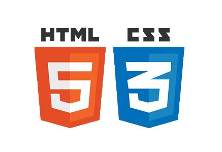

|
Je suis en STI2D en spécialité SIN je connais donc les bases de l'html et du css. |
|  |
Mais je sais utiliser aussi des logiciels de montage vidéo comme sony vegas par exemple, |
j'utilise regulierement photoshop pour déssiner(voir une partie des mes déssins sur la page dédier) |